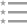

<!-- 
  Create tabs with an icon and label, using the tabs-positive style. 
  Each tab's child <ion-nav-view> directive will have its own 
  navigation history that also transitions its views in and out.
-->

<ion-nav-bar class="bar-balanced" style="background-color:#D52333;">
  <ion-nav-back-button class="button-icon icon">
    Back
  </ion-nav-back-button>
  <ion-nav-buttons side="right">
    <a ng-click="openModal()" class="button button-icon ion-compose"></a>
  </ion-nav-buttons>
</ion-nav-bar>

<ion-tabs class="tabs-icon-only" animation="slide-left-right">


  <!-- Dashboard Tab -->
  <ion-tab title="" href="#/tab/alertas">
    <ion-nav-view name="tab-alertas"></ion-nav-view>
  </ion-tab>

  <!-- Friends Tab -->
  <ion-tab title="" href="#/tab/telefonos">
    <ion-nav-view name="tab-telefonos"></ion-nav-view>
  </ion-tab>


  <!-- Account Tab -->
  <ion-tab title="" href="#/tab/rutas">
    <ion-nav-view name="tab-rutas"></ion-nav-view>
  </ion-tab>

  <!-- Account Tab -->
  <ion-tab title="" href="#/tab/trolley">
    <ion-nav-view name="tab-trolley"></ion-nav-view>
  </ion-tab>

  <!-- Account Tab -->
  <ion-tab title="" href="#/tab/recursos">
    <ion-nav-view name="tab-recursos"></ion-nav-view>
  </ion-tab>


</ion-tabs>
